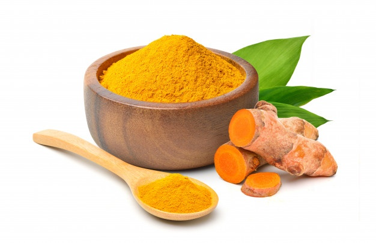
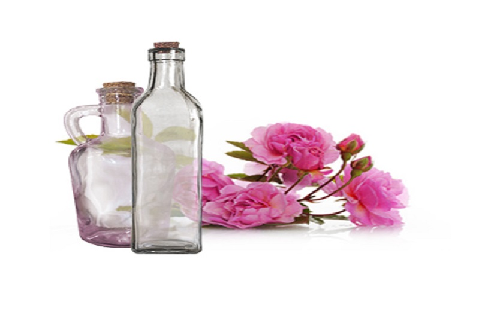
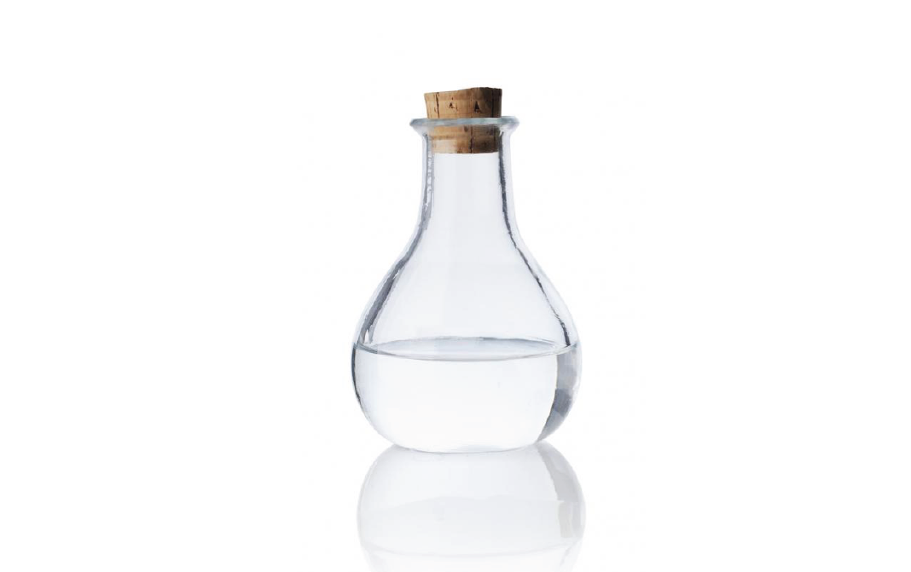

- Take chickpea flour or gram flour (i.e. besan), milk and turmeric powder in equal proportion.
- Mix it in a bowl.
- Rub the paste over your skin with a light hand and wash off the everyday dirt from your face and body.
- Tip: Use cream (i.e. malai) instead of milk in case of rough and dry skin.

- Take the peels of an orange and leave it to dry. Crush it up until it becomes a fine powder.
- Take chickpea flour or gram flour (i.e. besan) and mix it with the orange peel powder, and rose water.
- Mix it until it resembles a paste and use it as a scrub.

- Take glycerine, rose water and a little bit of lemon juice, and mix it up.
- Store it in a bottle and use it every night before bed to massage your face, hands, and feet.
- It helps soften the skin and remove dryness, especially in winters.
- Take some red lentils (i.e. masoor daal) and soak it in water overnight.
- Crush it up so it forms a paste and put it over the occasional blemish to clear it up.
- It also helps lighten the scars that pimples leave behind.